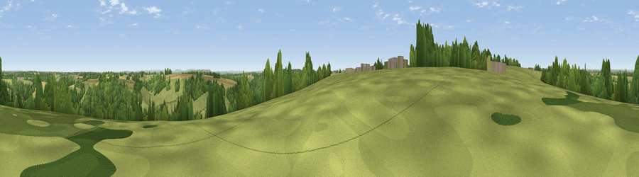

Viewpoint near North Wraxall
#30740 in England · top 51% of its area beats it · near North Wraxall · access?Where it is
The exact computed spot (ST 83525 73225). Click the marker for map links.
Public access: no public right of way or access land is recorded at this exact spot — it may be on private land. Computed from Natural England's CRoW access layer and OpenStreetMap rights of way — not the legal definitive map. Always verify locally.
The view, rendered

A 360° render of this exact spot computed from the terrain model, tree cover and land cover — summer colours, afternoon light, calibrated against photographs of famous viewpoints. Real trees, hedges and buildings will differ in detail.
The panorama
Grey silhouette: terrain skyline in each direction (720 bearings, Earth curvature and refraction included). Dashed green: skyline with trees (+15 m) and buildings (+8 m) as obstacles. Blue strip: how far the ground is visible on each bearing.
Where the view opens
Wedge length = distance to the farthest visible ground on that bearing (vegetation-aware). Rings at 10, 25 and 50 km.
What fills the view
46% grassland · 38% woodland · 15% cropland ·
Angular shares of the visible panorama (visual magnitude), not map area. Landscape diversity 0.45 (0–1 Shannon).
Key numbers
More beautiful places nearby
The staircase of upgrades: each row has a higher view potential than everything closer. Driving times are estimates from straight-line distance, calibrated against real road routing — check an actual route before setting out.
| Place | Direction | Drive | Score |
|---|---|---|---|
| Viewpoint near Colerne | SW · 2 km | ~5 min | 41.1 |
| Viewpoint near Colerne | SW · 4 km | ~8 min | 45.5 |
| Viewpoint near Ashley | SW · 5 km | ~11 min | 52.7 |
| Viewpoint near Marshfield | W · 8 km | ~16 min | 56.6 |
| Viewpoint near Bathford | SSW · 8 km | ~16 min | 62.4 |
| Viewpoint near Hinton | WNW · 9 km | ~18 min | 65.8 |
| Hanging Hill | WSW · 13 km | ~23 min | 76.4 |
| Viewpoint near Stinchcombe | NNW · 27 km | ~43 min | 80.5 |
51.45776, -2.23851 · source: screening · position refined by local search. Computed location — check access rights before visiting.